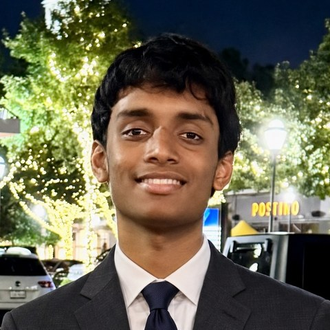

Suchay Kommisetty
CS @ UT Austin · Turing Scholars & Robotics Honors · Class of 2029
I'm a computer science student in UT Austin's Turing Scholars and Robotics Honors programs, and I want to do research in computer vision and robot perception.
At Sony, I built a real-time basketball action recognition system for Sony cameras using YOLOv8 and spatiotemporal transformers. At the University of Houston, I trained a Mask R-CNN model that segments renal tubules and immune cells in lupus nephritis biopsies, which was published and presented at ASN Kidney Week 2025, and I built "I Don't Know" classifiers that let self-driving systems pass uncertain predictions to a human instead of guessing, which cut false positives by 37%.
I'm looking for Summer 2027 software engineering and machine learning internships. Feel free to reach out at suchayk@utexas.edu.
Research & Experience
Artificial Intelligence Intern
Built a real-time basketball action recognition system for Sony cameras using YOLOv8 and spatiotemporal transformers to track and predict player actions simultaneously.
Student Research Assistant
Studied what makes images memorable using human recall studies and a dataset of 20,000+ labeled images, and built CNN pipelines with visual and linguistic feature extraction to predict image memorability scores for Nike digital ad optimization.
Research Intern, Real-Time Systems Lab
Built confidence-based "I Don't Know" (IDK) classifiers that let an autonomous driving system defer uncertain obstacle and sign predictions to a human operator instead of acting on them, cutting the false positive rate by 37%. Trained the models on 500,000+ annotated objects from the Waymo Open Dataset and nuScenes, and tested them on physical DuckieTown robots and in SUMO traffic simulation.
Lead Student Researcher, Mohan Lab
Developed a clinical AI diagnostic tool for lupus nephritis by training a Detectron2 Mask R-CNN model on 3,000+ labeled kidney biopsy images. First co-author on TRIMS, published and presented at ASN Kidney Week 2025.
Research Intern
Built LSTM and CNN models that detect anomalies in EPA air-quality data (PM2.5 and ozone) and flag patterns linked to wildfires, industrial accidents and sensor failures, reaching 99.87% to 100% accuracy with a ROC-AUC of 1.0.
Publications & Presentations
- TRIMS: Deep-Learning Segmentation of Renal Tubules and Immune Cells in 32-Marker Spatial Proteomic Images from Lupus Nephritis Biopsies · ASN Kidney Week 2025
- Perovskite solar cells with quantum dot buffer layers: simulated power conversion efficiency raised from 7.99% to 27.99% · IEEE IEMDC 2025 · 3rd place, Science and Engineering Fair of Houston
Projects
Dance Fantasy
Takes any song and builds a dance routine on the beat, a 3D dancer teaches you the moves while your webcam scores you, and friends can join from their own devices. I built the v2 scoring system that scores each player's webcam movements against the routine.
Forge Runner
A low-cost delivery robot for small restaurants and bars that follows a line of tape instead of mapping the room with LiDAR. A guest scans a QR code to order, staff tap Send on a web dashboard, and an ESP32 drives the robot to the right seat by counting strips of tape with light sensors, with an ultrasonic sensor that stops it when someone is in the way. It snaps together from 15 3D-printed parts for about $105 per robot, compared to $10,000+ for commercial serving robots.
Cricket Guru Auto-Player
An auto-player for a T20 cricket game played through Discord. It captures the screen with mss, reads each delivery and the scorecard with OpenCV and Tesseract OCR, tracks the match state, and scores every shot by expected runs minus a wicket penalty that scales with the required run rate and wickets in hand. The per-batter shot tables behind the model came from parsing game-log transcripts.
Green Acres
Recommends which crops to plant at any location. You click a point on a map, the app pulls temperature, humidity and rainfall from Open-Meteo, and a Keras model behind a Flask API combines them with soil nitrogen, phosphorus, potassium and pH to rank 22 crops.
Robot Tour: Autonomous Maze-Navigation Robot
I wrote the A* path planner that routes the robot through a walled 4x4 grid and past bonus gates. The controller collapses straight runs into single long drives and runs separate PID loops for distance and gyro-measured turns to keep dead-reckoning drift low.
Honors
- 1st Place Overall and Best Use of SerpApi, HackTX 2026 · 2026
- Most Technical Award, UT Austin Makeathon · 2026
- National Merit Finalist · 2026
- USA Computing Olympiad, Platinum Division · 2025
- American Invitational Mathematics Examination (AIME) Qualifier · 2024, 2025
- 3rd Place, System Control Technology, TSA National Conference · 2025
- VEX Robotics World Championship Qualifier (5x) and FIRST Robotics Competition World Championship Qualifier
Education
The University of Texas at Austin
Jordan High School
Leadership
Founder & President, Eduneeds
A nonprofit that tutors refugee and immigrant students in Houston. Recruited and trained 15 tutors and served 300+ students from elementary school through AP and competition-level STEM.
Co-Founder, Math4All
A nationwide nonprofit that makes competition math more accessible, grown to 1,300+ members with $140K+ in sponsorships from companies like Jane Street, Art of Problem Solving and Desmos.